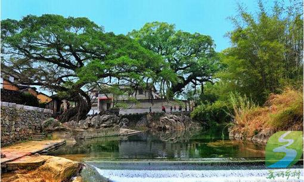
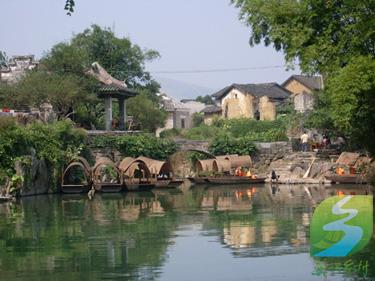
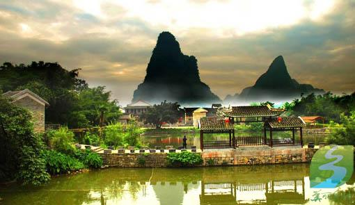

广西昭平：净美黄姚
时间：

记者到达广西昭平县黄姚古镇时，正下着一场绵绵细雨。古树抽出了新芽，溪水欢快地流淌着。
黄姚古镇就像一颗遗落在南国的璀璨明珠，得山川河流之毓秀，清溪环绕。古镇发源于宋朝开宝年间，兴建于明朝万历年间，鼎盛于清乾隆年间，街道和房屋按九宫八卦布局，曲径通幽，已有近千年历史。清朝乾隆年间，黄姚的经济达到鼎盛时期，家家经商，户户开店，特别是黄姚豆豉，被指定为朝廷贡品，黄姚也因此成为方圆数百里最繁荣的商业闹市。有山必有水，有水必有桥，有桥必有亭，有亭必有联，有联必有匾，构成古镇独特的风景。据了解，现在全镇完整保存着8条石板街，全长10多公里。明清古建筑保存有300多幢，面积达1.6万平方米。景观建筑有亭台楼阁10多处，寺观庙祠20多座，特色桥梁11座，楹联匾额上百副。
在黄姚，记者注意到，虽然各地游客纷至沓来，但这座生活着2700多人的偏僻小村镇却出奇的干净。这里的每一块青石地板，都似乎被擦洗过一样。

72岁的村民古杏全在景区附近开了一家米粉店，年收入5万多元。他告诉记者，干净整洁是黄姚的生命和招牌，黄姚越干净，来的游客越多，大家的日子就越红火。
垃圾围村，也曾经是黄姚面临的一大困境。以前，街道上禽畜粪便堆积，8座石拱桥下就是村民倒垃圾的地方，村里垃圾清理基本上靠洪水来冲走。
卫生环境差，在很大程度上影响了旅游业的发展。2013年，黄姚开展了清洁乡村活动，着力解决转变群众意识、垃圾分类处理和建立长效机制等热点问题改善乡村人居环境。
黄姚古镇风景名胜区管理局局长朱启军介绍说，过去一年，清理了公路两旁、江河两岸等地的陈年垃圾2500余吨，完成了2个污水处理中心，一座垃圾中转站建设，还新建一座生活垃圾磁力热分解消纳处理站，对全体村民进行生活垃圾处理技术培训。村里如今有70多名保洁员，每天开展保洁工作3次。村里还初步建立了“村收集、镇运输、县处理”的垃圾处理运行机制，探索建立农村垃圾、污水处理、垃圾就地消化等机制，引导群众通过建设沼气池和化粪池的方式处理农村污水，通过由农民自行分类，再由保洁员检查分类处理，或晾晒、或焚烧、或沤肥、或收集处理，以变废为宝的方式处理垃圾，实现垃圾就地消化、循环利用。
古杏全说，如今农民家家户户都对自己家实行“门前三包”。还通过村规民约这样的朴实方式，进行自我约束管理。现在脏、乱、差现象没有了，不论老街还是新街都很干净。
环境卫生的改善，使地变干净了，水变清了，空气变清新了，古镇景观得到了较好的保护，吸引了越来越多的游客前来旅游观光。2013年，黄姚古镇共接待游客279.42万人次，游客量同比增长29.96%，实现旅游总收入26.37亿元，同比增长42.54%。
自然古朴的生活气息，加上洁净优美的环境，如今的黄姚愈加散发出迷人的魅力。清晨在鸟鸣的呼唤声中醒来，推开窗户，吮吸着甜甜的空气和淡淡的青草花香。沿街的店铺、摊点，摆满了古朴、特色的黄姚物品，路过的游客轻轻地抚摸它们而过。眯眼打盹的老人，坐在门槛上，靠着木门边，倾听着古镇的声音。妇女相约而来，蹲在“仙人古井”旁，取水、捶衣，而孩子们则在一边尽情地嬉戏。日近黄昏，古镇即重归于远离尘嚣的宁静，偶闻的犬吠声在寂寥的街巷里悠长悠长蔓延。空气中飘逸着淳朴，人们享受着悠闲自在，这就是黄姚古镇人们的生活方式。

旅游：农历正月初二游鱼龙庆丰年；三月初三抢花炮求好运；七月初七取仙水迎吉祥；七月十四放柚子灯祭河神。
美食：佐餐调味佳品——黄姚豆豉、辣椒酱，滋补佳品——九制黄精等。来源：经济日报
原文链接： 广西昭平：净美黄姚